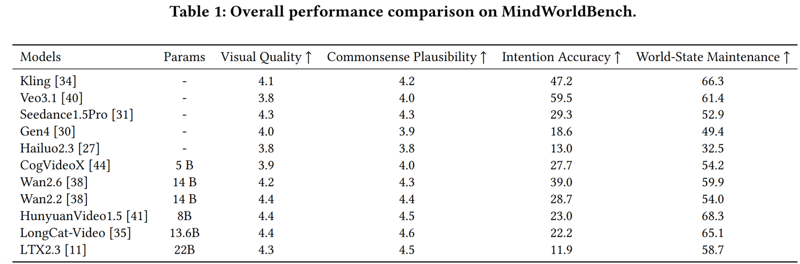
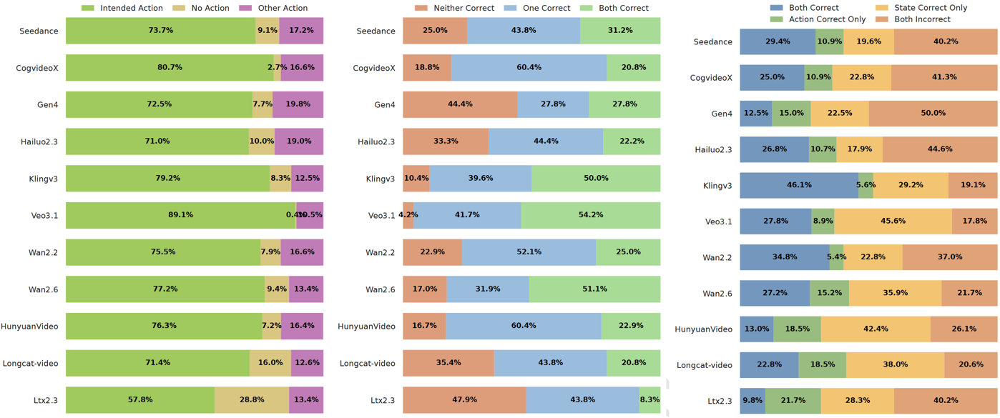

Overview

Current image-to-video models achieve visual realism and physical plausibility, but reasoning about latent mental states remains unexplored. Since actions are often driven by beliefs, desires, and perceptions rather than explicit instructions, we introduce MindWorldBench to evaluate mental-state-conditioned video generation. We formalize a mental-state-to-behavior reasoning task in which models must generate actions from world states and latent mental variables without action prompts. MindWorldBench adopts zero-action prompting with counterfactual prompt design to isolate the causal effects of mental states, and an automated evaluation pipeline measures video quality, commonsense plausibility, and mental-state consistency. Evaluations across eight models show that, despite strong visual fidelity, current systems fail to align behaviors with latent mental states, revealing an Omniscient Bias in which models default to objective world states rather than a human subject's beliefs. These results expose a gap between video generation and cognitive reasoning, and highlight the need for explicit mental-state modeling in future generative systems.





@inproceedings{li2026mindworldbench,
title={MindWorldBench: Evaluating Mental-State-to-Behavior Reasoning in Image-to-Video Generation},
author={Ruiqi Li and Xuanyi Liu and Sijia Li and Yuxin Liu and Feng Xie and Haofeng Wang and Songchao Tan and Shiqi Wang and Hanwei Zhu and Yizong Wang and Chuanmin Jia and Siwei Ma},
year={2026}
}